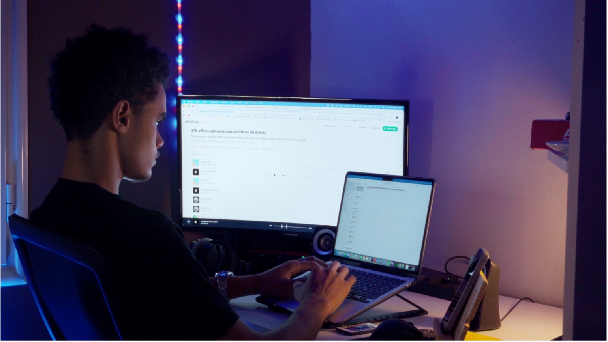

Pourquoi la Licence Professionnelle Métiers de l'Internet - Application Web ?

Pendant un moment, je ne savais plus vers quelle orientation me diriger, car je pensais avoir trop de centres d'intérêt pour pouvoir trouver un métier qui les regroupe. J'ai toujours voulu transformer mes passions en activité professionnelle.
Mon choix de formation
La Licence Professionnelle Métiers de l'Internet - Application Web est parfaitement ce que je recherchais, car elle regroupe la créativité, la technique et l'aspect professionnel, ce qui m'orienter vers la réussite. Je serai également amené à réaliser des travaux de groupe avec des personnes partageant les mêmes passions pour l'informatique, ce qui me permet d'établir des contacts des maintenant pour l'avenir dans mon domaine.
Cette formation est parfaite pour moi, étant donné que je suis actuellement à Madagascar et qu'il n'existe pas de formation équivalente sur ici. Elle me permettra donc de développer des compétences que je pourrais utiliser, même à l'international. Elle est parfaite car elle enseigne les métiers de demain, des métiers qui vont nous permettre de devenir indispensables dans le monde numérique. Le format à distance me permet de suivre la formation tout en continuant mes engagements personnels à côté. Il me permettra de développer des compétences dans le développement de sites web et d'applications web, dans la conception et la gestion de projets numériques. Elle me donnera également les connaissances pour exploiter des données pour faire de d'analyse et pour comprendre comment utiliser mes compétences dans tous les domaines.
Mon projet professionnel et vision personnelle
Mon projet professionnel est de créer ma propre entreprise de création digitale, une entreprise capable de regrouper la création et gestion de projets sur internet, de créer des contenus vidéo et la production pour donner vie aux idées de mes futurs clients.
Mon objectif est de regrouper tous mes centres d'intérêt dans une entreprise polyvalente, capable de répondre à tous les besoins numériques et créatifs. Et grâce à cette formation, je vais développer les compétences nécessaires pour la création de ce projet et développer une activité professionnelle innovante dans le domaine du digital.
La Licence Professionnelle Métiers de l'Internet - Application Web à Limoges représente pour moi un moyen concrétiser mes ambitions. Elle me permet de regrouper mes passions, mes engagements personnels et mon projet professionnel, tout en développant des compétences solides et un diplôme reconnu.